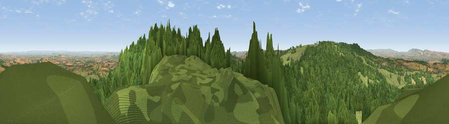

Viewpoint near Buckland St. Mary
#3636 in England · top 10% of its area beats it · near Buckland St. MaryThe view, rendered

A 360° render of this exact spot computed from the terrain model, tree cover and land cover — summer colours, afternoon light, calibrated against photographs of famous viewpoints. Real trees, hedges and buildings will differ in detail.
The panorama
Grey silhouette: terrain skyline in each direction (720 bearings, Earth curvature and refraction included). Dashed green: skyline with trees (+15 m) and buildings (+8 m) as obstacles. Blue strip: how far the ground is visible on each bearing.
Where the view opens
Wedge length = distance to the farthest visible ground on that bearing (vegetation-aware). Rings at 10, 25 and 50 km.
What fills the view
64% woodland · 29% grassland · 6% cropland ·
Angular shares of the visible panorama (visual magnitude), not map area. Landscape diversity 0.37 (0–1 Shannon).
Key numbers
More beautiful places nearby
The staircase of upgrades: each row has a higher view potential than everything closer. Driving times are estimates from straight-line distance, calibrated against real road routing — check an actual route before setting out.
| Place | Direction | Drive | Score |
|---|---|---|---|
| Viewpoint near Buckland St. Mary | ESE · 0 km | ~2 min | 77.3 |
| Viewpoint near Hewish | ESE · 15 km | ~26 min | 78.5 |
| Cothelstone Hill | NNW · 19 km | ~32 min | 82.1 |
| Viewpoint near West Bagborough | NNW · 21 km | ~35 min | 84.3 |
| Wills Neck | NNW · 22 km | ~37 min | 85.7 |
| Golden Cap | SSE · 27 km | ~44 min | 88.7 |
| The Knoll | SE · 38 km | ~58 min | 91.0 |
50.93747, -3.03869 · source: screening · position refined by local search. Computed location — check access rights before visiting.